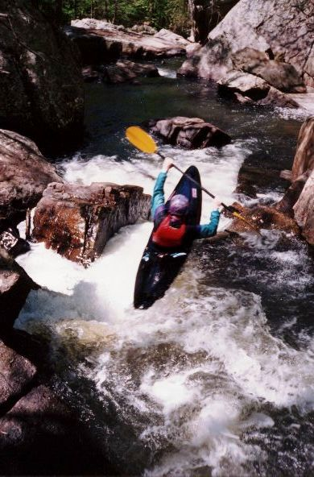
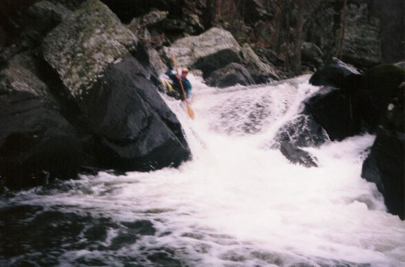

|
Sloan on a tight drop near the beginning of the run, "Welcome to Jones" |
|
Five to six foot vertical near beginning of Jones, around six to seven inches |
|
Sloan at top of Ricochet |
|
Sloan on Ricochet, around 12- 14 inches |
|
Ron in middle of Ricochet, low water - six to seven inches |
|
Ron on Ricochet near the bottom of the drop, around fourteen inches |
|
Sloan stuck at bottom of ricochet, around six to seven inches, same part of
drop |
|
Ron on drop after Ricochet, we call this Gonzo Falls(long
story). See the submerged rock to his left? This is what you've gotta miss,
it's not hard with low water but at higher levels you wanna run closer to it
to avoid the hole which gets really grabby at a foot and higher. Ron had a
genuine near death, I'm coming to join you Ethel experience in this hole.
At eleven inches and more you can run to the left of it |
|
Same drop around six to seven inches, you can see the rock |
|
Ron exiting a drop in middle of Jones steep section |
|
Dustin on Hatchet, this is where Jones gets real interesting, Funnel is
just downstream |
|
Ron on Hatchet, ten to twelve inches |
|  |
Ron on Funnel, a hard move at any level, just before Eye of the needle
which leads into Bowdown. These three are really one long Class V with many places to broach, pin, or
just screw up |
 |
Another angle of Funnel, Ron |
|
A Vest on Eye of the needle. The log was removed by Tony Robinson of Knoxville a few years
ago, made the move a lot more fun, easier. Tony also made the new gauge, the new ladder around the falls, removed the log in Freight Train
(long rapid above Casey Jones), bolted safety ropes behind the falls, as well as cut many other logs on several occasions.
|
|  |
Sloan on Bowdown around six to seven inches, riding high right in the "groove
tube". Water has eroded a groove in this rock, if you don't boof into the groove you
go "bowdown" |
|
-? on Bowdown, good level, ten inches? |
|
Exiting bowdown |